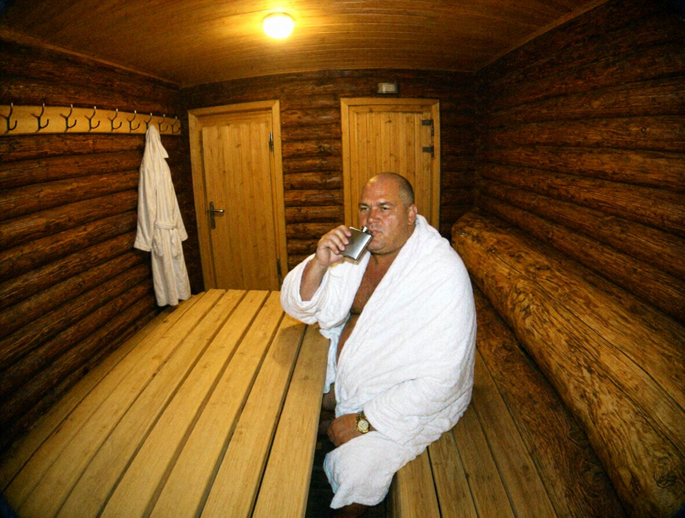
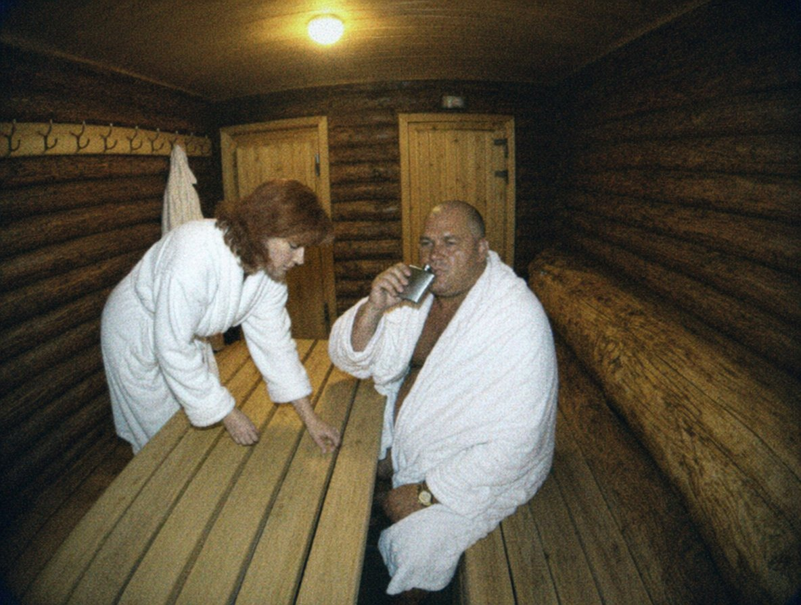
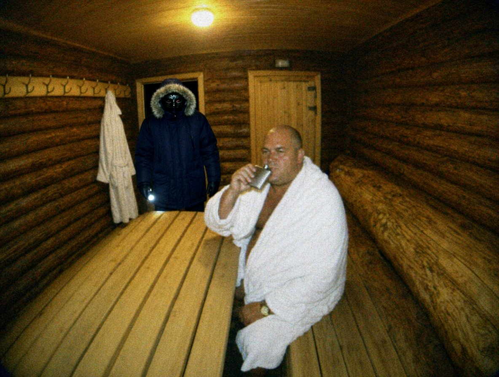
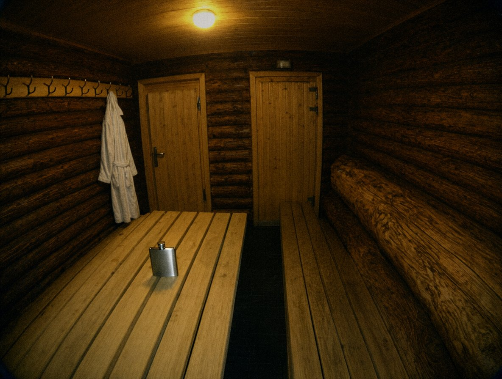
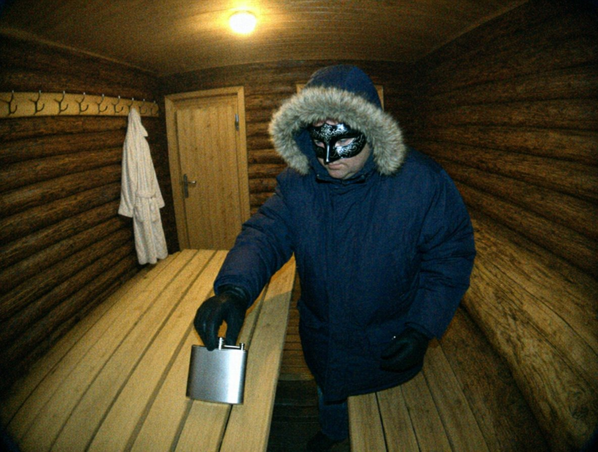

| Таймкод | Що на кадрі |
|---|---|
| 03:30:00 | Кімната відпочинку, світло горить, нікого. Стіл, лава вздовж стіни, вішак біля задніх дверей, двері парилки збоку. |
| 03:31:10 | З боку парадних дверей заходить чоловік у білому халаті. Лисина. |
| 03:31:40 | Вішає халат на гачок вішака (біля задніх дверей). Загортається у біле простирадло. |
| 03:32:05 | Ставить на стіл плоский металевий предмет (фляга). Сідає на лаву. |
| 03:33–03:39 | Сидить, дивиться перед собою; один раз потирає обличчя. Фляга на столі. |
| 03:40:12 | Бере флягу, відкручує кришку, п'є. (кадр 1) |
| 03:41–03:44 | Ще кілька великих ковтків, фляга в руці. 03:44:30 ставить флягу на стіл, кришка лежить поряд. |
| 03:45–04:08 | Сидить на лаві, похитується. 03:52:20 підводиться, стоїть, тримається за стіл; 03:52:50 сідає. |
| 03:58:20 | Підходить до вішака, дістає з кишені халата телефон, тримає біля вуха ≈ 20 с, ховає назад у кишеню халата. |
| 04:08:40 | З боку парадних дверей заходить жінка в халаті, руда. Нахиляється, шукає на підлозі. (кадр 2) |
| 04:09–04:11 | Щось говорить до чоловіка (звуку нема), показує на підлогу; чоловік махає рукою. 04:10:50 вона піднімає щось із підлоги біля лави. |
| 04:12:10 | Жінка виходить через парадні двері. |
| 04:12–04:14 | Чоловік сидить на лаві, голова схилена. Більше нікого. |
| 04:14:22 | Задні двері відчиняються. У дверях людина в темній куртці з хутряним каптуром, у масці, в рукавичках; у правій руці ліхтарик. (кадр 3) |
| 04:14:50 | Людина підходить до лави, нахиляється до чоловіка. |
| 04:15–04:19 | Людина підводить чоловіка; вони виходять з кадру в бік дверей парилки (двері в кадрі збоку; через кут їх видно частково). |
| 04:19:10 | Людина повертається в кадр сама, береться за лаву, тягне по підлозі. |
| 04:20:31 | Лава впритул до дверей парилки. Кімната порожня. (кадр 4) |
| 04:21:05 | Людина виходить задніми дверима. |
| 04:21–04:52 | У кімнаті нікого. Лава на місці. Світло горить. Фляга й кришка на столі, халат на вішаку. |
| 04:52:30 | Задні двері. Та сама людина (куртка з каптуром, маска, рукавички) заходить. |
| 04:52:50 | Відсуває лаву від дверей парилки, ставить біля стіни. |
| 04:53:07 | Бере зі столу флягу. (кадр 5) |
| 04:54:10 | Підходить до вішака, бере щось із кишені халата, ховає за пазуху. |
| 04:54:40 | Іде до дверей парилки, відчиняє, виходить з кадру. |
| 04:56:30 | Повертається в кадр; з дверима парилки зачиненими. |
| 04:58:15 | Виходить задніми дверима. |
| 04:58:20–05:10:00 | Порожня кімната, світло горить. Запис закінчується на 05:10:00. |